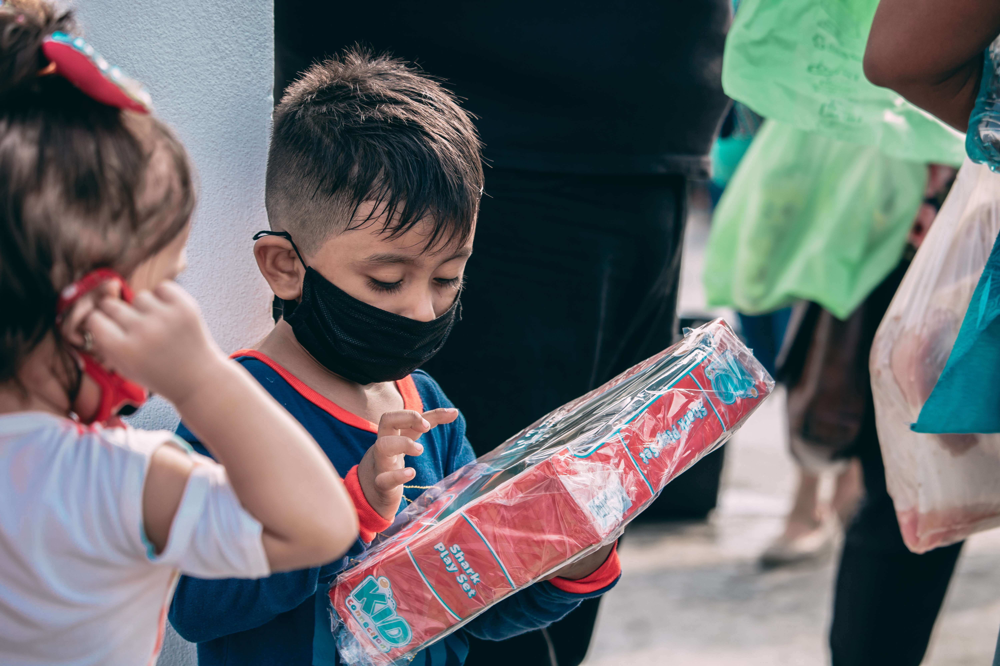

Design Challenge
The first step of the process was defining the design challenge using an exercise from the IDEO Human Centered Design Toolkit. This helped narrow the focus of the problem.
The first step of the process was defining the design challenge using an exercise from the IDEO Human Centered Design Toolkit. This helped narrow the focus of the problem.

The next step of the process was evaluating the audiences that will be using the site and narrowing down the goals for the website based on the audience groups.
Next, I interviewed individuals in my target audience to gain insight into what's important for the website and what could be improved.